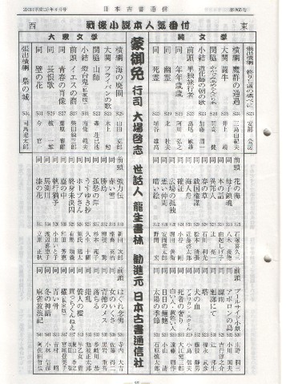

今日は９月９日、昔風にいえば重陽の節句。いや、めでたい、めでたい。そこでめでたいついでに、めでたい話を。
日本古書通信という、古書専門の月刊誌がある。古い歴史を持った雑誌というだけでなく、情報度も非常に高い。そこで古書ファン必読の雑誌となっている。その雑誌のH13/8月号に、相撲の番付表を模した戦後小説の人気番付が載っていた。
昭和20年（1945）から平成12年（2000）までの55年間、その間に日本でどれだけの小説が発表されたのか知らない。ひょっとしてく数十万に及ぶかもしれない。そのすべての小説の中からたった62冊だけの選出であるから、このリストに名前が載るのは並大抵のことではない。
番付は純文学と大衆文学に分けられ、それぞれ32人づつが掲載されているが、その大衆文学の枠に、なんと我らが阿佐田哲也の「麻雀放浪記」が選出されている。
リストを見ると、人気小説のタイトルとともに、三島由紀夫だとか司馬遼太郎はいうに及ばず、柴田錬三郎、松本清張、新田次郎に大江健三郎など、戦後日本を代表する錚々たるメンバーが名前を連ねている。

で、よく見てほしい。このリストの最後（最下段、左端）に、「麻雀放浪記 阿佐田哲也」とある！。(^0^)V
水上勉や南條範夫、源氏鶏太に池波正太郎。人気があるのはもちろんだし、囲碁や将棋を知らなくたって、おもしろく読める。麻雀放浪記だって、麻雀を知らなくても、おもしろく読めるだろう。しかし麻雀小説だけに、ほかの小説に比べると多少は読者層/読者数にハンデがある。そんな中での、この番付入り。いかに「麻雀放浪記」が人気があるか、よくわかる。
|